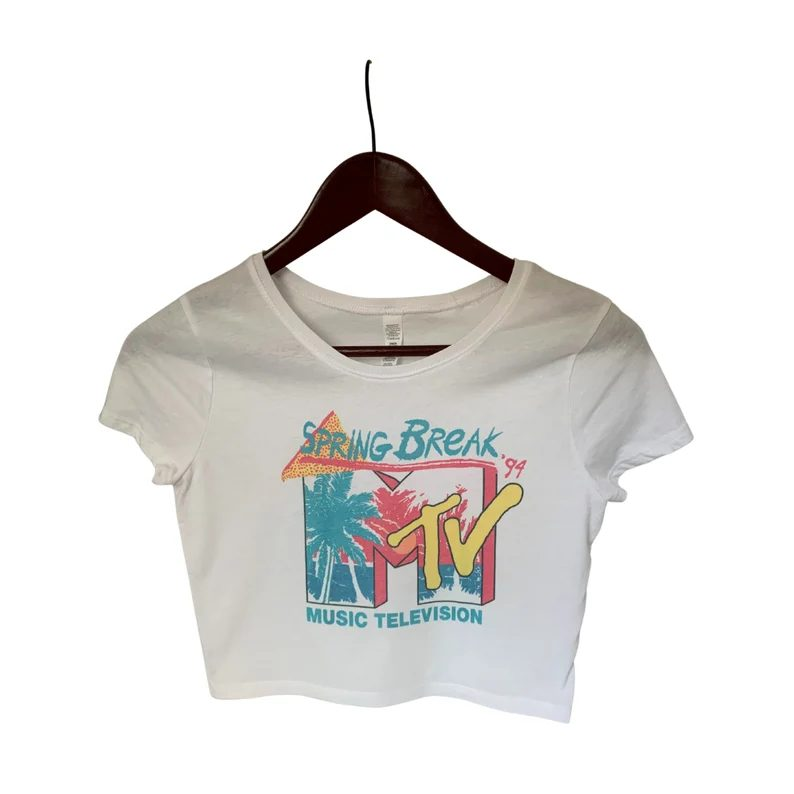
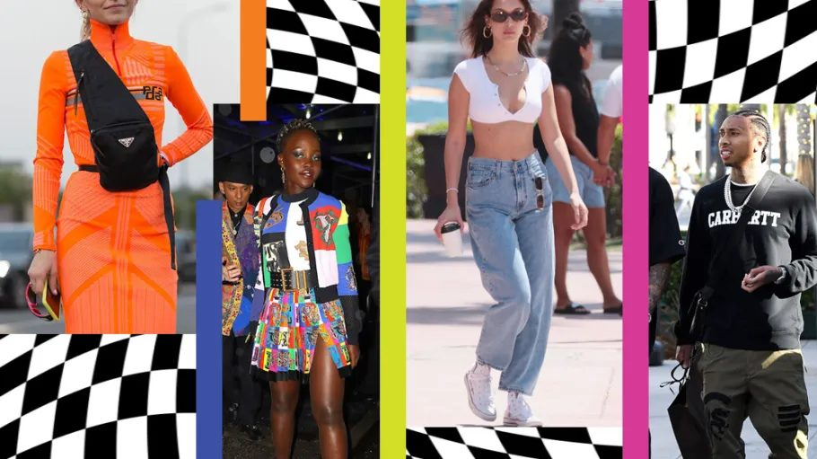
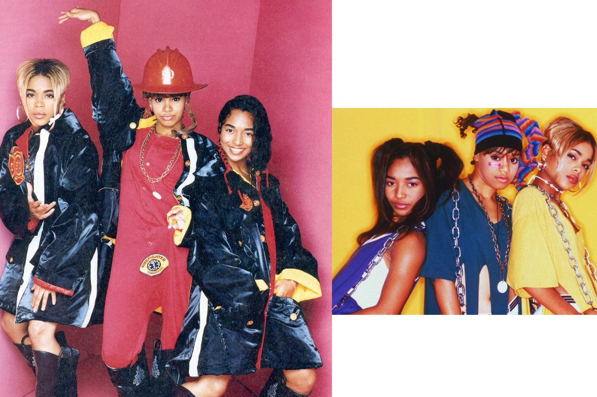
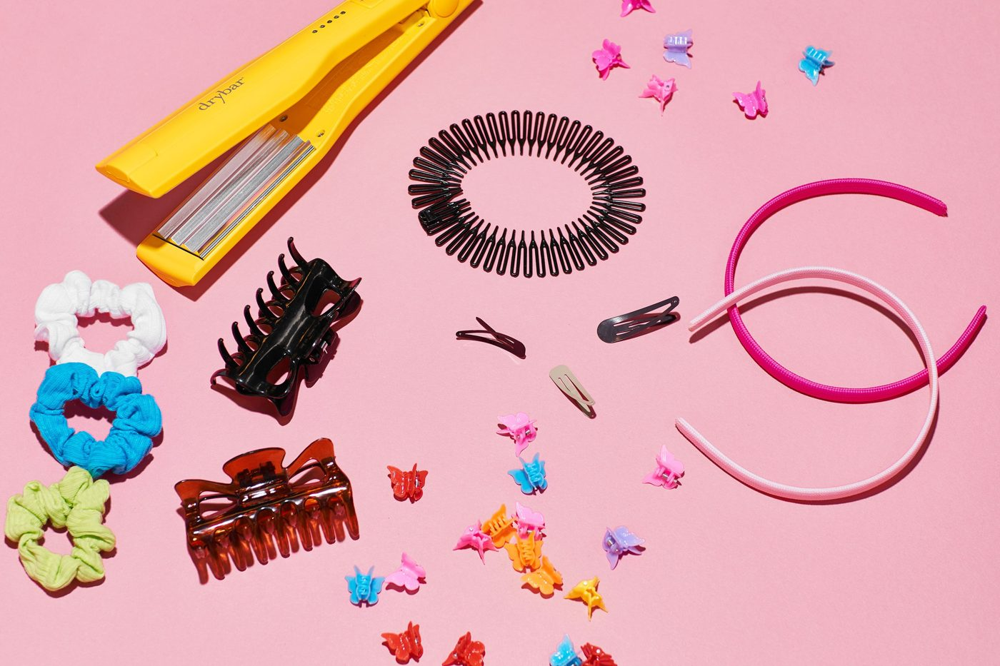
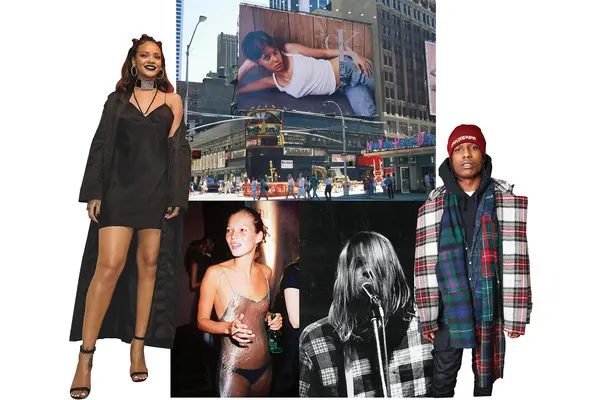
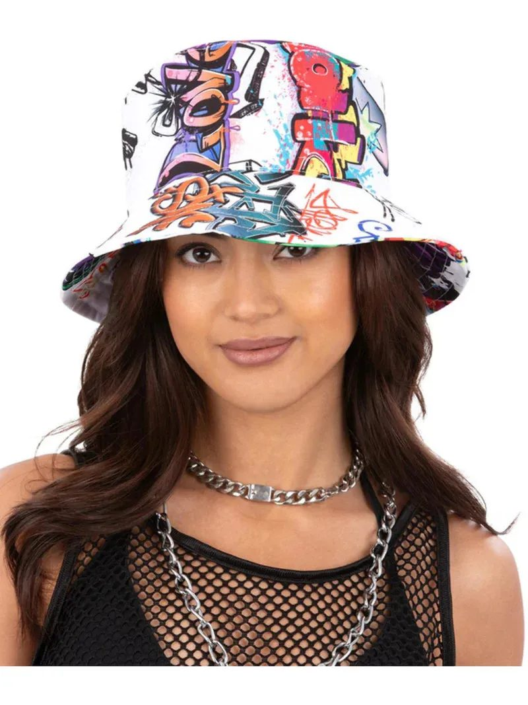
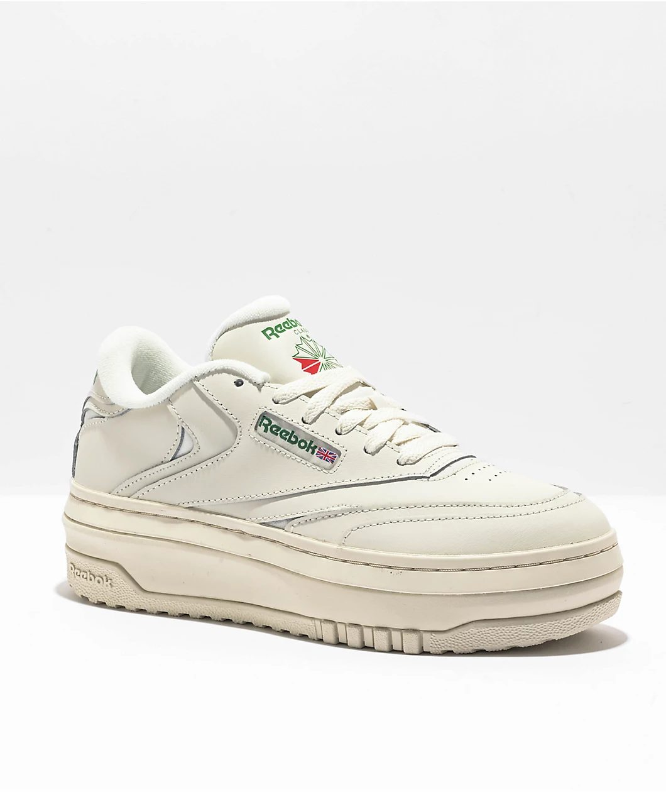

Retro Crop Top
A faded graphic crop top, worn with high-waisted jeans.
A journey through the iconic fashion trends of the 1990s.

The 1990s were marked by diverse, eclectic fashion. Influenced by pop culture, music, and film, '90s fashion keeps making a comeback today.
Grunge meant flannel shirts, ripped jeans, and Doc Martens, while hip-hop fashion embraced baggy jeans, oversized shirts, and bucket hats. Preppy and vintage-chic looks brought plaid skirts, cardigans, and knee-high socks. Minimalism made its mark with slip dresses, muted tones, and simple cuts; gothic and alternative styles featured black leather, fishnets, and chokers. Athleisure rose too, with tracksuits, windbreakers, and branded sneakers.

Icons included Kate Moss, Naomi Campbell, Kurt Cobain, Tupac Shakur, the Spice Girls, and shows like Friends and Clueless.

Chokers, mood rings, and scrunchies, plus practical fanny packs and platform shoes. Tiny sunglasses, bucket hats, and oversized hoop earrings were everywhere, and have made a comeback.

Modern brands and social media influencers are bringing '90s trends back, blending vintage vibes with contemporary style.


A faded graphic crop top, worn with high-waisted jeans.

The hip-hop staple, now back on every festival field.

Chunky soles for extra height and attitude.
Two '90s must-haves, and what they'd cost in today's money.
| Item | Image | Category | 1990s price | Today | Description |
|---|---|---|---|---|---|
| Nike Air Max 95 |  | Shoes | $140 (1995) | ≈ $288 | Its layered, gradient design made it a streetwear grail. Source: Grailed |
| Tamagotchi |  | Accessories | $15–$18 (1997) | ≈ $29–$35 | The digital pet clipped to every backpack and belt loop. Source: Mental Floss |
Today's prices are adjusted for inflation into 2024 dollars using the U.S. Consumer Price Index (BLS CPI-U). Photos are from Wikimedia Commons; select a photo to see its author and license.
Watch "Fashion of the 1990s" on YouTube
Want to go deeper? See the Fashion History Timeline for 1990–1999 from the Fashion Institute of Technology.